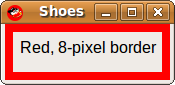

The Shoes Manual
Border
A border is a color, gradient or image painted in a line around the edge of any slot. Like the Background element in the last section, a Border is a kind of Shoes::Pattern. 
The first, crucial thing to know about border is that all borders paint a line around the inside of a slot, not the outside. So, if you have a slot which is fifty pixels wide and you paint a five pixel border on it, that means there is a fourty pixel wide area inside the slot which is surrounded by the border.
This also means that if you paint a Border on top of a Background, the edges of the background will be painted over by the border.
Here is just such a slot:
Shoes.app do
stack :width => 50 do
border black, :strokewidth => 5
para "=^.^=", :stroke => green
end
end
If you want to paint a border around the outside of a slot, you'll need to wrap that slot in another slot. Then, place the border in the outside slot.
Shoes.app do
stack :width => 60 do
border black, :strokewidth => 5
stack :width => 50 do
para "=^.^=", :stroke => green
end
end
end
In HTML and many other languages, the border is painted on the outside of the box, thus increasing the overall width of the box. Shoes was designed with consistency in mind, so that if you say that a box is fifty pixels wide, it stays fifty pixels wide regardless of its borders or margins or anything else.
Please also check out the Elements section for other methods used on borders.
Creates a basic pattern object based on the color, gradient or image used to paint this border. The pattern may then be re-used in new borders and backgrounds.
Next: Button